About Canada
Canada is a large and developed country in North America known for its high quality of life and multicultural society. It is one of the most popular destinations for immigrants due to its strong economy and good education system.
Capital
Ottawa
Language
English / French
Currency
$ CAD
Time Zone
UTC -3.5 to -8
Important Festivals
See all →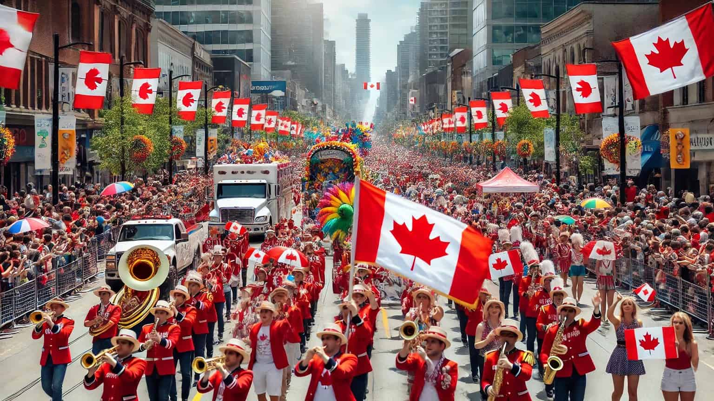
Canada Day
Celebration of Canadian independence with fireworks and events.
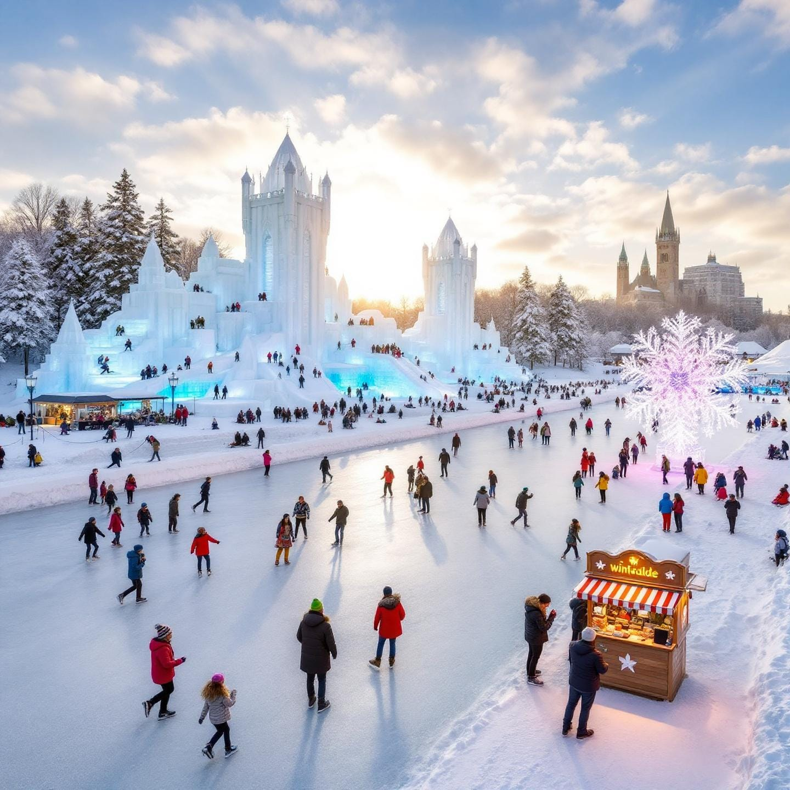
Winterlude
Winter festival in Ottawa with ice sculptures and skating.
Famous & typical Food
See all →
Poutine
Fries with cheese and gravy.
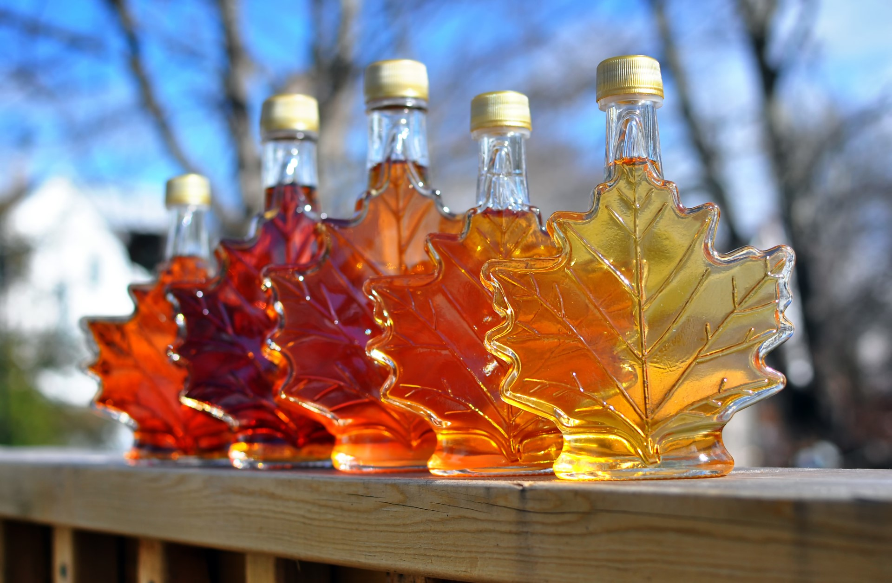
Mapple Syrup
Sweet syrup used in many dishes.
Top landmarks & cities
See all →
CN Tower
Famous tall tower
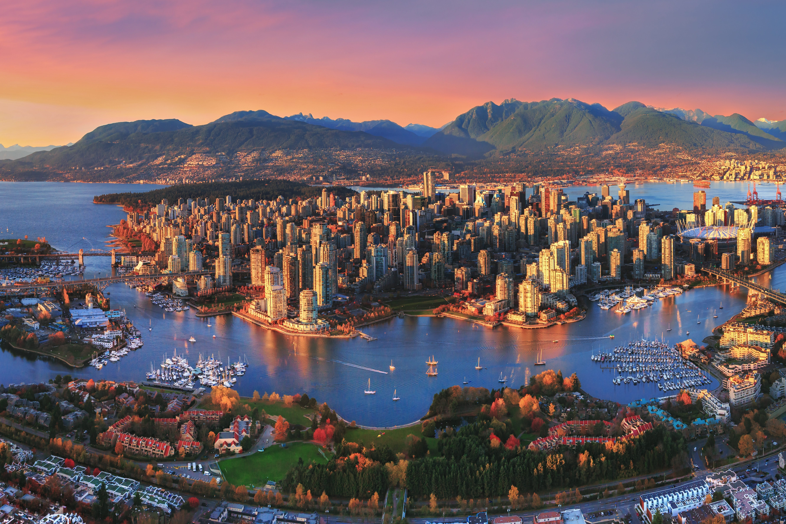
Vancouver
Coastal city with mountains.
Thinking of moving to Canada?
Canada has one of the most open immigration systems in the world. It offers many programs for workers and students. The official Canadan immigration agency is the Immigration, Refugees and Citizenship Canada (IRCC).
Visit the Official immigration website ↗Events & Festivals
Canada has many cultural and national festivals throughout the year. These events celebrate music, culture, and national identity.
All festivals
Canada Day
1st JulyThe biggest national celebration honors the country's founding. Towns and cities host large outdoor concerts, street festivals, community barbecues, and impressive fireworks displays at night.
Winterlude
Early FebruaryA popular winter celebration in Ottawa. Millions put on their skates to glide along the Rideau Canal, admire detailed ice sculptures, and enjoy huge snow playgrounds.
Toronto International Film Festival
Early SeptemberOne of the largest and most famous public film festivals in the world. The city attracts Hollywood stars, global filmmakers, red-carpet premieres, and fans eager for major movie previews.
Calgary Stampede
Early JulyKnown as "The Greatest Outdoor Show on Earth," this massive ten-day event celebrates western heritage with top-notch rodeo competitions, agricultural shows, live music, and large daily parades.
Montreal Jazz Festival
Late June - Early JulyThe largest jazz festival in the world turns downtown Montreal into a vibrant musical center. Hundreds of musicians perform on large free outdoor stages and intimate indoor venues.
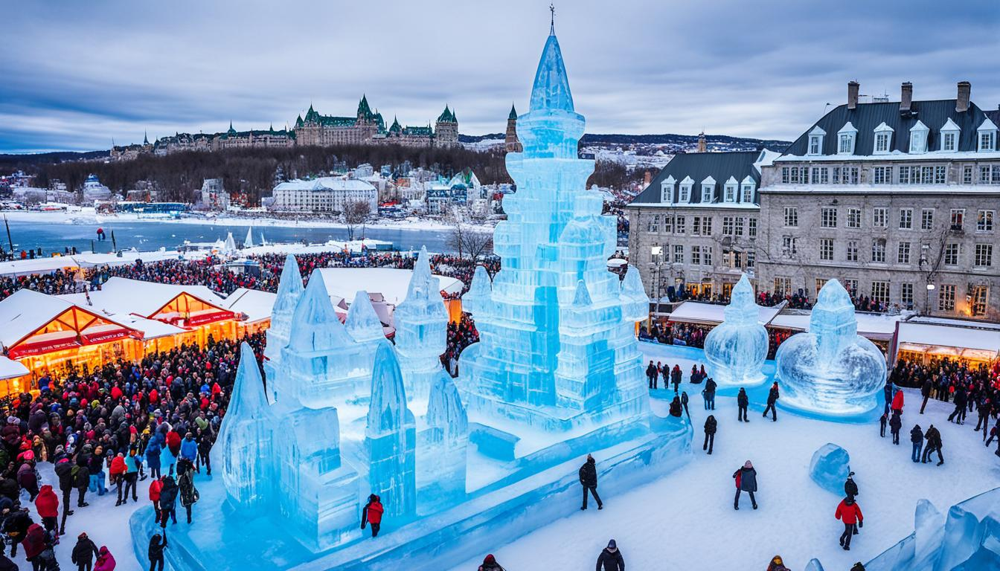
Quebec Winter Carnival
Late January - Early FebruaryLed by the iconic Bonhomme mascot, this famous winter celebration features nighttime parades, exciting ice canoe races on the frozen river, giant snow slides, and warm caribou drinks.
Culture
Canada is a multicultural country with influences from many cultures around the world.
Values & Customs
Based on multiculturalism and inclusivity, Canadians value diversity, fairness, and mutual respect. Social interactions reflect a strong sense of politeness, modest attitudes, and an emphasis on personal space.
Respect Diversity Equality
Art & Traditions
The cultural landscape is rich, drawing from Indigenous storytelling, carving, and textile art. Modern traditions thrive through a celebrated film scene, world-renowned musicians, and year-round multicultural community festivals.
Music Film Indigenous culture
Religion
Canada is diverse and secular, allowing everyone to practice their faith freely. While Christianity has historically been the most common, many people actively practice Islam, Hinduism, Sikhism, Buddhism, and Judaism.
Secular Multicultural
Etiquette
Politeness is crucial, with frequent use of "please," "thank you," and apologies. Punctuality is expected. Tipping is a strong social custom, typically fifteen to twenty percent at restaurants and bars.
Politeness Tipping Respect
Food
Canadan food includes seafood, meat, desserts, and dishes influenced by British and Asian cultures.
Famous Dishes
Poutine
The ultimate comfort food features crispy french fries topped with squeaky cheese curds and covered in rich brown gravy.
Mapple Syrup
Canada's golden treat comes directly from maple trees. This sweet syrup is often drizzled over pancakes or boiled down into maple candy.
Butter Tarts
A classic dessert made of a pastry shell filled with a rich, gooey mix of butter, sugar, and egg, sometimes baked with raisins or pecans.
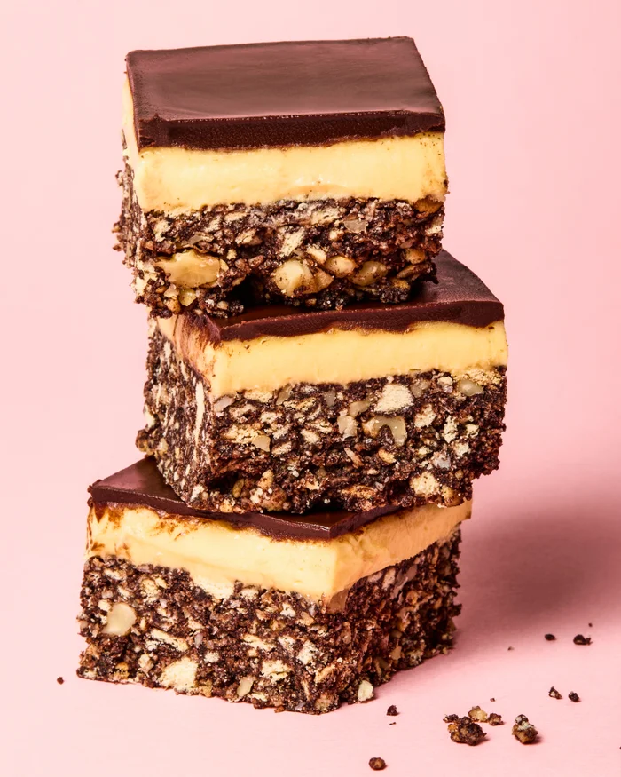
Nanaimo Bars
A rich, no-bake dessert square from British Columbia, featuring a crumbly chocolate-coconut base, sweet custard layer, and chocolate ganache topping.

Tourtière
A comforting French-Canadian meat pie filled with spiced ground pork, beef, or game, traditionally served during Christmas feasts.
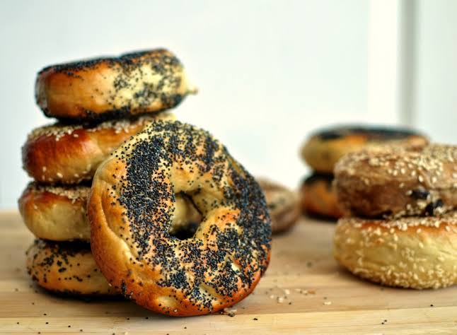
Bagels (Montreal style)
These unique, dense bagels differ from New York styles. They are poached in honey-sweetened water and baked in wood-fired ovens for a chewy bite.
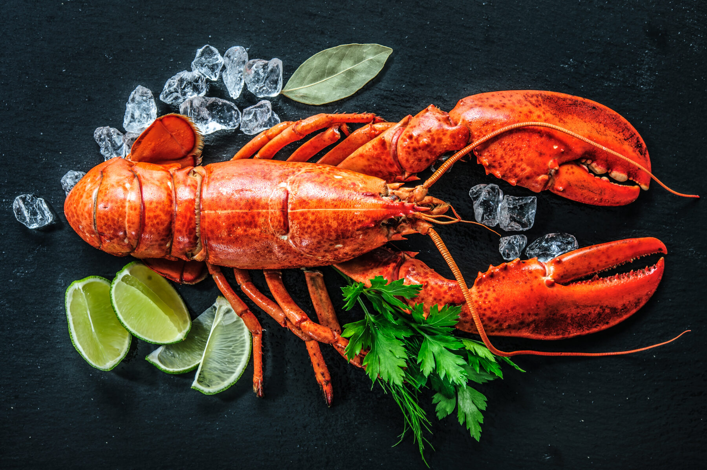
Lobster
Freshly caught from the Atlantic coast, Canadian lobster is famous worldwide for its sweet taste, usually served steamed with melted butter.
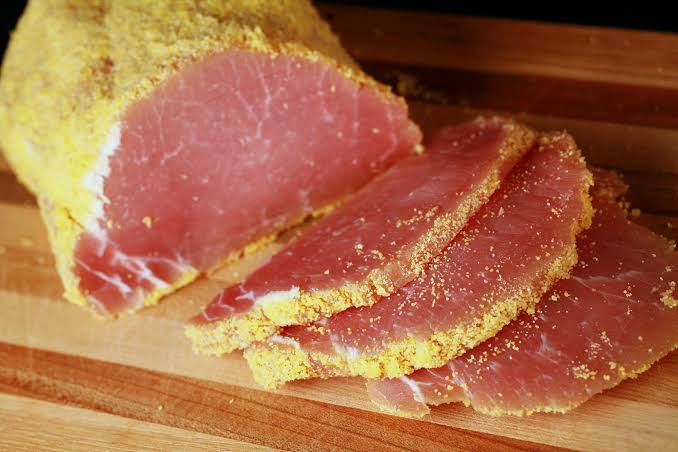
Peameal Bacon
Lean pork loin cured in brine and rolled in cornmeal, typically sliced thick and grilled as a breakfast sandwich favorite.
Weather
Because Canada spans six time zones, weather varies greatly by region. These monthly figures represent the liquid equivalent of both rain and snow averaged across major populated hubs.
Montly overview
To be mindful of
Best time to visit
May - SeptemberWarm weather, long sunny days, and oen national parks make this time ideal for hiking, festivals, and sightseeing.
Careful: Winter
December - FebruaryFreezing temperatures, heavy snowstorms, and very short days can make travel hard unless you are visiting ski resorts.
Careful: MUD season
April - MayMelting snow creates muddy hiking trails, unpredictable slushy weather, and ongoing closures on higher-elevation mountain routes.
Landmarks
Canada combines modern cities with untouched wilderness. You can explore lively urban centers filled with excellent dining and culture. Then, step into stunning landscapes featuring towering, snow-capped mountains, clear glacial lakes, and thick alpine forests.
CN Tower
Sydney, New South WalesA tall concrete communications tower that stands out in the Toronto skyline. It is well-known for its glass floor view and the exciting EdgeWalk experience.
Vancouver
QueenslandA lively west coast seaport surrounded by stunning snow-capped mountains and clear ocean waters, featuring amazing urban parks.
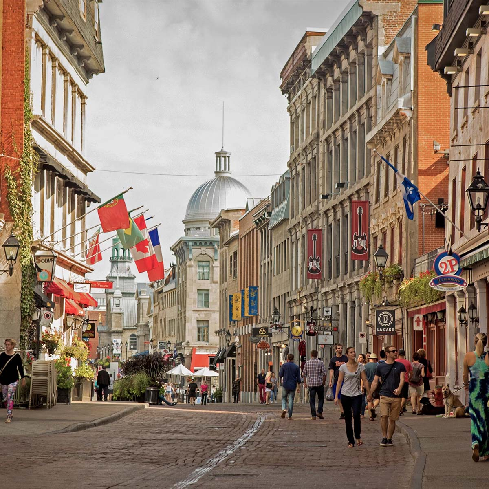
Montreal
Northern TerritoryA vibrant cultural center that mixes European charm with historic cobblestone streets, artistic architecture, and a well-known culinary scene.
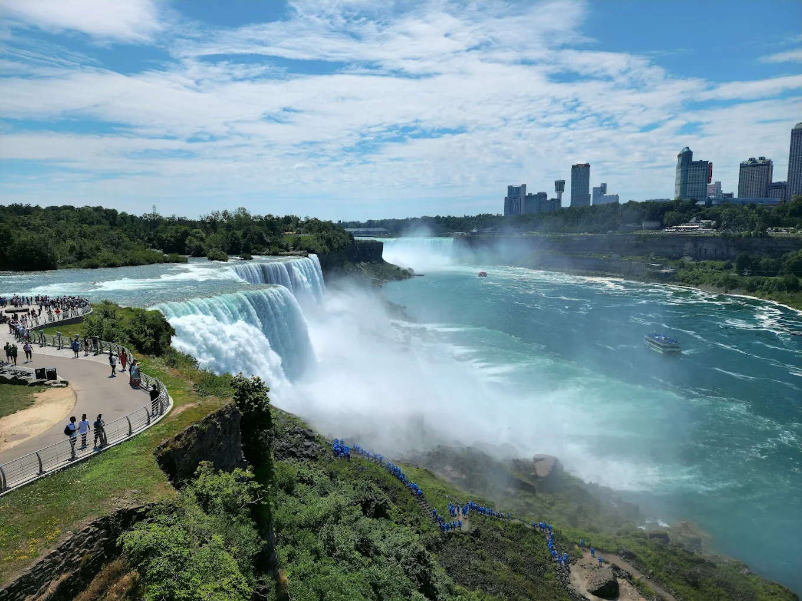
Niagara Falls
VictoriaA stunning natural wonder located on the American border. Here, large volumes of cascading water create a loud, misty spectacle.
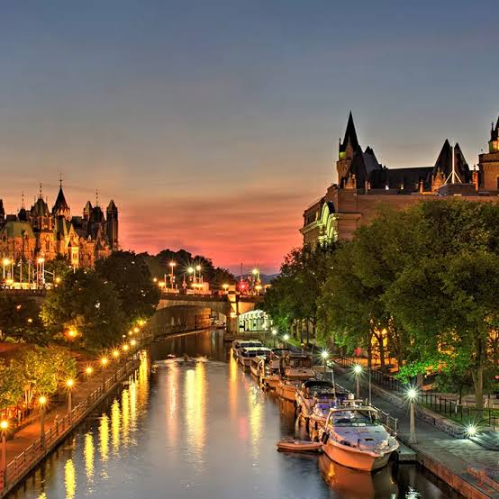
Ottawa
QueenslandThe country’s impressive capital, marked by grand Gothic Revival parliament buildings, historic museums, and picturesque urban waterways.
Banff National Park
New South WalesA surreal wilderness refuge in the Rocky Mountains. It is renowned for its turquoise glacial lakes and impressive alpine peaks.
Immigration
Canada has one of the most open immigration systems in the world. It offers many programs for workers and students.
Canada immigration officer
Canada's offical immigration agency is the Immigration, Refugees and Citizenship Canada (IRCC)
Official Canadan immigration website ↗Common visa types
⚠️Always check with the corresponding official agency. This table might not be up to date and different rules apply to different origin countries.
| Visa type | Duration | Processing time | Notes |
|---|---|---|---|
| Tourist | 3, 6 or 12 months | Few days to weeks | |
| Work | Up to 4 years | 2-6 months | Skill or employer required |
| Student | Duration of study | 2-6 weeks | |
| Spouse/Family | Depends | 1-3 months | |
| Residency | - | 6-24 months | Points test or sponsorship |
| Digital nomad | - | - | No official visa |